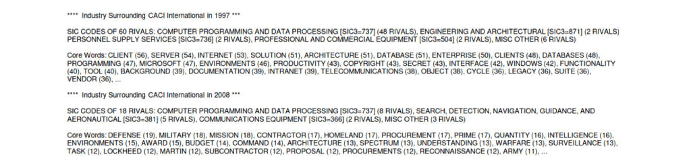
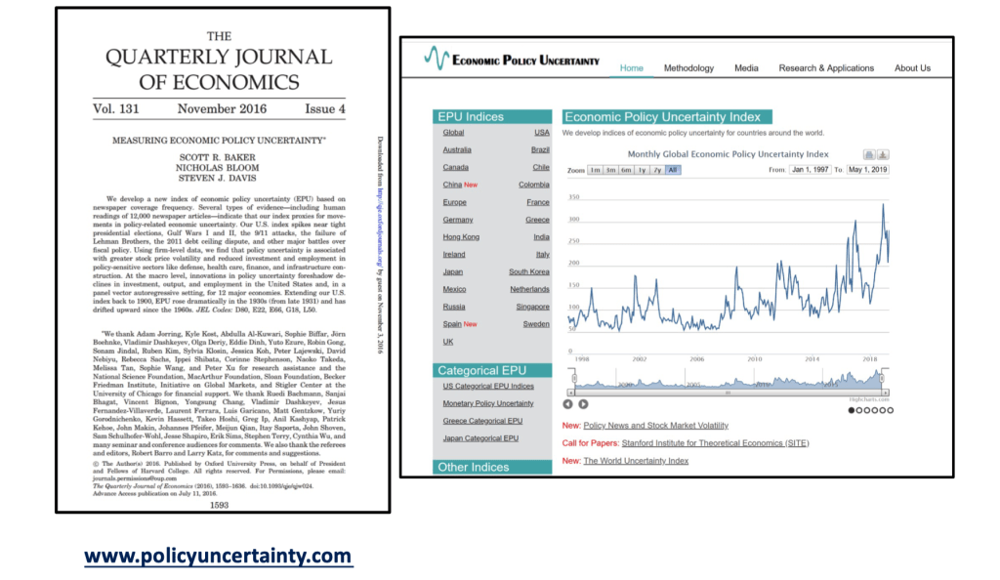
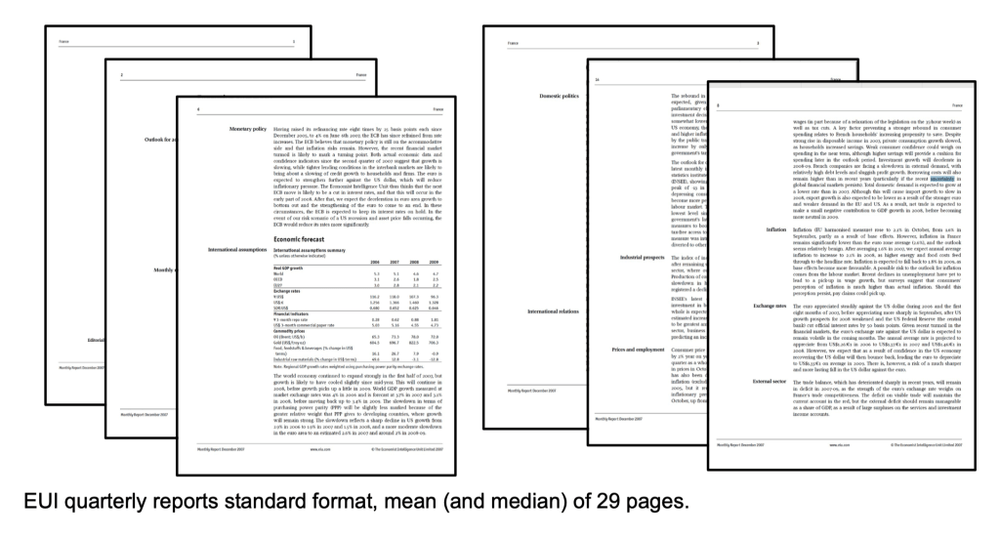
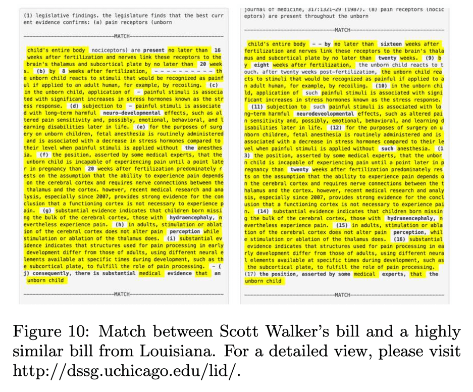
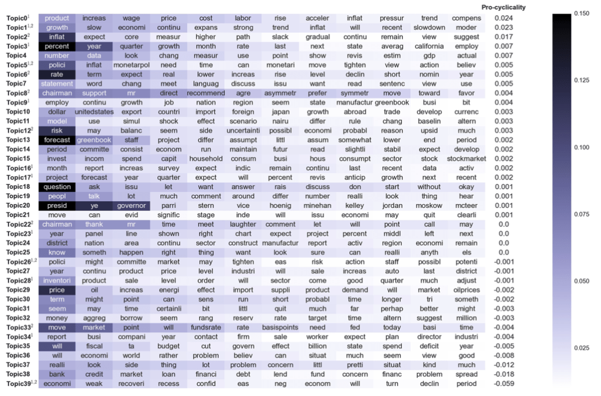

Research Applications
Contents
Research Applications#

Textual analysis#
Textual analysis becoming increasingly popular in asset pricing, macro, and other fields.
Most successful applications use text to measure economic concepts that are otherwise hard or impossible to measure.
So-far, simplest applications have been the most successful.
Many cutting-edge methods of machine learning are not necessary or even counter-productive, similar to kitchen-sink regressions, prone to over-fitting.
Advice:
keep it simple.
stay close to the text, read a lot.
frontier is more in learning from new data than in fancy techniques.
Firm-level political risk#
by Hassan, Hollander, van Lent, and Tahoun (2019)
What share of the conversation between management and participants centers on political risks?
Extract all two-word combinations (“bigrams”) from training libraries indicative of discussion of political topics, P, and non-political topics
Conference Call Transcripts
Transcripts of 326,247 earnings conference calls of 11,943 firms headquartered in 84 different countries, available 2002-20 from EIKON.
Typically four calls per year, after earnings releases.
Management presentation followed by Q&A with firm’s analysts (0-70 questions, average duration 45 min).
Measure of Political Risk
Count the number of occurrences of (exclusively) political bigrams in conjunction with a synonym for risk or uncertainty and divide by the total number of bigrams in the transcript:
\(PRisk_{it} = \frac{1}{B_{it}}\sum_{b}^{B_{it}}\{1[ b \in \mathbb{P}\setminus\mathbb{N}] \times 1[|b-r| \lt 10] \times f_{b,\mathbb{P}}/B_{\mathbb{P}}\}\)
where \(r\) is the position of the nearest synonym of risk or uncertainty and \(b = 0,1,\ldots B_{it}\) are the bigrams contained in call of firm \(i\) at time \(t\).
(Application of “\(tf \times idf\)”)
Synonyms for “risk” or “uncertainty”

Measuring news about the mean: \(PSentiment_{it}\)
Use same approach to measure mean of political news:
Count positive and negative words (“sentiment”) used in conjunction with a political bigram:
\(PSentiment_{i,t} = \frac{1}{B_{it}} \sum_{b}^{B_{it}} \Big( 1[ b \in \mathbb{P}\setminus\mathbb{N}] \times \frac{f_{b,\mathbb{P}}}{B_{\mathbb{P}}} \times \sum_{c=b-10}^{b+10} S(c) \Big) \),
where \(S\) assigns sentiment to each \(c\) (Laughran & McDonald 2011)
\(S(c) = \begin{cases} +1 \text{ if } c \in \mathbb{S}^{+} \\ -1 \text{ if } c \in \mathbb{S}^{-} \\ 0 \text{ otherwise} \end{cases}\)
Find that \(Corr(PRisk_{it}, PSentiment_{it}) = −0.095^{***}\)
\(PRisk_{it}\) identifies conversations about risks associated with political topics.
Bigrams with highest scores intuitively linked to politics (‘the constitution,’ ‘public opinion,’ ‘interest groups,’ ‘the FAA’ …) Transcripts with highest PRisk it indeed center around discussions about ballot initiatives, legislation, regulation, government expenditure,…
Transcripts with highest PRisk

Example: Duke Energy Corporation
A coal company’s \(PRisk_{it}\)
Sources and Transmission of Country Risk#
by Hassan, Schreger, Schwedeler, and Tahoun (2021)
For each of 56 countries assemble a training library, \(\mathbb{T}^{C}\)
All “Country Commerce” reports published by the Economist Intelligence Unit 2002-2016
All names of the country, names of towns with more than 15,000 inhabitants in 2018, and administrative subdivisions from geonames.org and CIA World Factbook.
Use \(tf \times idf\) to identify two-word combinations (‘bigrams’) that are indicative of discussion of each country. For example, a mention of “Angela Merkel” is indicative of discussions of country \(C\) if,
The bigram if frequent in \(C\)’s training library
It is rarely used in other countries’ libraries
Four Dimensions of \(CountryRisk_{i,c,t}\)
Risk a given set of firms K associates with country c:
\(CountryRisk_{c,t}^{K} = \frac{1}{N_K}\sum CountryRisk_{i,c,t}\)
Foreign risks perceived by firm i at time t:
\(ForeignRisk_{i,t} = \sum_{c \ne d(i)} CountryRisk_{i,c,t}\)
Transmission of risk from o to d at time t:
\(TransmissionRisk_{o \to d,t} = \frac{1}{N_d}\sum CountryRisk_{i,o,t}\)
Global Risk at time t:
\(GlobalRisk_{t} = \frac{1}{N_I}\frac{1}{N_C}\sum_{i \in I}\sum_{c \in C} CountryRisk_{i,c,t}\)
Measuring Exposure, Sentiment, and Firm Risk
\(CountryExposure_{i,c,t}\) : tf × idf weighted share of words related to country c
\(CountrySentiment_{i,c,t}\) : tf × idf weighted sum of tone words toward country c (Loughran & McDonald 2011) (Proxy for positive/negative news about country c)
\(FirmRisk_{i,t}\) : Unweighted count of risk words. (Proxy for overall risk faced by the firm)
Financial and Non-Financial Risk: Greece
Financial and Non-Financial Risk: Thailand
Financial and Non-Financial Risk: Global
Hoberg and Philips (2016)#
Use similarity between product descriptions in 10Ks to identify industry clusters.
How similar are two firms’ products?
The most popular way of calculating similarity is cosine similarity.
\( S_{i,j} = c_i \cdot c_j \)
where \(c_i\) is the normalized representative vector of words for document \(i\).
A creative way of figuring out who is competing with whom!
Product Descriptions to Vector
Only keep nouns (webster.com) and proper nouns. Drop most commonly used nouns.
Vector (\(c_i\)) is binary values for included words.
Cosine similarity between all firm-year pairs results in a huge matrix with firm-year as rows and columns.
Cluster firm-pairs year by year to form yearly industry clusters.
Result
Sample industry that changed a lot
Use this to track who is competing with whom, form industry definitions.
One drawback of 10K’s: only available for US firms.

Measuring Economic Policy Uncertainty (EPU)#

This proxy for Economic Policy Uncertainty (EPU) comes from computer searches of newspapers
US index: 10 major papers get monthly counts of articles with:
E{economic or economy}, andP{regulation or deficit or federal reserve or congress or legislation or white house}, andU{uncertain or uncertainty}
Divide the count for each month by the count of all articles
Normalize and sum 10 papers to get the U.S monthly index
Constructing the US News-Based EPU Index
Newspapers:
Boston Globe
Chicago Tribune
Dallas Morning News
Los Angeles Times
Miami Herald
New York Times
SF Chronicle
USA Today
Wall Street Journal
Washington Post
Validation: Running Detailed Human Audits
10 undergraduates read ≈ 10,000 newspaper articles to date using a 63-page audit guide to code articles if they discuss “economic uncertainty” and “economic policy uncertainty”

US News-based economic policy uncertainty index

Twitter text uncertainty measures
“world uncertainty index” covering 143 countries from Economist Intelligence Unit text

Global average of all 143 countries

The Diffusion of Disruptive Technologies#
Bloom, Kalyani, Lerner, and Tahoun (2021), The Diffusion of Disruptive Technologies
Construct text-based measures of exposure to 20 different technologies at the firm, patent, and job-level, 2002-19.
Use these novel data to study the spread of new technologies across firms, regions, occupations, and skill-levels.
Five Stylized Facts on Disruptive Technologies
Development & initial employment in disruptive technologies is geographically highly concentrated.
Over time, hiring associated with new technologies gradually spreads: “region broadening.”
Over time, skill level in tech jobs declines sharply: “skill broadening.”
Low-skill jobs associated with a given technology spread out significantly faster than high-skill jobs.
Pioneer locations retain long-lasting advantage in high-skilled jobs.
Data Sources
Full text of USPTO patents (1976-2016)
Typically follow a research paper format – invention title, abstract, claim, description.
Transcripts of Earnings Conference Calls (2002-19)
Discussions of 300k+ quarterly earnings by 12k publicly listed firms.
Typically contains management presentation followed by analyst Q & A.
Full text of 200 M+ online job postings from BG (2007, 2010-19).
Scraped from job forums (e.g., Glassdoor.com) and employer websites.
Geo-coded and assigned to SOC Codes
Step 1: Identify Technical Bigrams from Patents
Identify two-word combinations (bigrams) that are indicative of discussion of novel technologies.
Extract all (17 mil+) bigrams US patents (1976-2016)
Remove any bigrams that were commonly in use prior to 1970 (Corpus of Historical American English)
Keep bigrams which account for at least 1000 citations.
List of 35,063 ‘technical bigrams’ associated with influential inventions.
Top Bigrams in Patents

Step 2: Identify Disruptive Technologies from Earnings Calls
Identify technical bigrams that are discussed in EC with increasing frequency (keep those at <10% of max in first year) – Total 305.

Technical vs non-technical bigrams
Non technical bigrams = bigrams in earnings calls and NOT in patents

Step 3: Bigrams to Technologies
Two alternative approaches
“Supervised”: Group bigrams with similar meaning to measure the spread of 29 specific technologies, add `synonyms’ and manually audit each bigram. (Main specification)Smart Devices - mobile devices; smartphone tablet; android phones; smart phones …
3d printing - 3d printer; 3d printing; additive manufacturing; d printed
“Unsupervised”: Treat each tech bigram as a separate technology without any further intervention. (Robustness check)
Technology Exposure
Measure technology exposure at the patent, earnings call, and job level as
\( \text{exposure}_{i,\tau,t} = 1\{b_{t} \in D_{i,t}\} \)
where \(D_{i,t}\) is the set of bigrams contained in a job posting/earnings call posted at time \(t\) and \(b_{\tau}\) is a bigram associated with technology \(\tau\).
Example Jobs Exposed to Smart Devices

On average, each technical bigram appears in 59,013 job postings. Compare to 157 average mentions of top non-technical bigrams from earnings calls.
Define an Emergence Year for each Technology
Measure the share of earnings calls mentioning a technology
Define a “technology year of emergence” as year in earnings calls when
the time series first attains at least 10% of its maximum.

Share Exposed Firms and Job Postings – Corr. 80%
Pioneer Locations
Define pioneer locations as ones which account for 50% of technology patents 10 years before emergence year.
Broadening over Time and Pioneer Locations

Parts of Speech Predict Loan Repayment#
Netzer, Lemaire, and Herzenstein (2019), “When Words Sweat”
Imagine you consider lending $2,000 to one of two borrowers on a crowdfunding website. The borrowers are identical in terms of demographic and financial characteristics. However, the text they provided when applying for a loan differs:
Borrower #1:
“I am a hard working person, married for 25 years, and have two wonderful boys.
Please let me explain why I need help.
I would use the $2,000 loan to fix our roof.
Thank you, god bless you, and I promise to pay you back.”
Borrower #2:
“While the past year in our new place has been more than great,
the roof is now leaking and I need to borrow $2,000 to cover the cost of the repair.
I pay all bills (e.g., car loans, cable, utilities) on time.”
Which borrower is more likely to default?
“Loan requests written by defaulting borrowers are more likely to include words (or themes) related to the borrower’s family, financial and general hardship, mentions of god, and the near future, as well as pleading lenders for help, and using verbs in present and future tenses.”
Loan Application Words Predicting Repayment


“Legislative Influence Detectors”#
by Burgess et al
The two largest interest group associations: ALEC (on the conservative side) and ALICE (on the liberal side)


Compare bill texts across states in two-step process:
find candidates using elasticsearch (tf-idf similarlity);
compare candidates using text reuse score.
From Pork to Policy#

Topic modeling Federal Reserve Bank transcripts#
Analyze speech transcripts from FOMC (Federal Open Market Committee).
private discussions among committee members at Federal Reserve (U.S. Central Bank)
150 meetings, 20 years, 26,000 speeches, 24,000 unique words.
Pre-processing:
drop stopwords, stems; vocab = 10,000 words
LDA:
K = 40 topics selected for interpretability / topic coherence.

Pro-Cyclical Topics

Counter-Cyclical Topics

Effect of Transparency
In 1993, there was an unexpected transparency shock where transcripts became public.
Increasing transparency results in:
higher discipline / technocratic language (probably beneficial)
higher conformity (probably costly)
Highlights tradeoffs from transparency in bureaucratic organizations.
Text matching for causal inference#
Application to online censorship in China by Roberts, Stewart, and Nielsen (2018)
Construct a corpus of chinese social media posts, some of which are censored.
593 bloggers, 150,000 posts, 6 months
They use a variation of propensity score matching to identify almost identical posts, some of which were censored, and some of which were not.
Outcome:
Using text of subsequent posts, measure how likely they are to be censored (how censorable)
Can see whether censorship has a deterrence or backlash effect.
Censorship has a backlash effect

Bloggers who are censored respond with more censorable content.